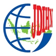

JDIH Kementerian Transmigrasi
Jaringan Dokumentasi dan Informasi Hukum
Beranda
Peraturan
Pembentukan PUU
Informasi
Beranda
›
Informasi
Informasi dan Layanan
Informasi, layanan dan panduan penelusuran hukum.
Informasi